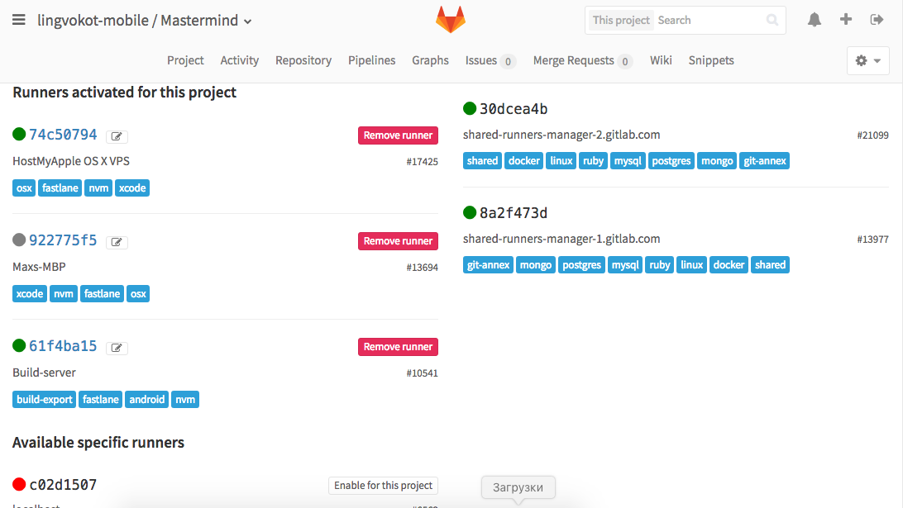

Gitlab and Lingvokot
 +
+
Gitlab
Almost same as GitHub
Organizations
Almost same as GitHub
Projects
Almost same as GitHub
Issues
Almost same as GitHub
Issues with Labels
Almost same as GitHub
Pull Requests named as Merge Requests
Almost same as GitHub
Milestones
Almost same as GitHub
Tags
Integrated CI
Pipelines
Integrated CI
Builds
Gitlab Continuous Integration
Short info about Gitlab CI differences
Easy setup
Add runners
Easy setup
Add .gitlab-ci.yml
Custom addons
Badges
Generated by bash shell script in Gitlab CI job.Custom addons
Badges
Actually they are links to our static WEB server,
where gets exported coverage info, static analysis results
Coverage on WEB Server
Generated by Jest, test runner used with React Native
Static analysis WEB Server
Generated by Plato
More info
See in this presentation:
Gitlab Continuous Delivery
TL;DR: How to create CD process
both for beta and prod
- Find a tool for working with stores (upload apk, ipa, upload metadata of app), get wraps for xcode, gradle
- Export your secrets (keys, accounts) into servers, make these servers tagged Gitlab CI runners
- Create a super-tweaked job in .gitlab-ci.yml
"a tool for stores"
Fastlane
Fastlane can (for us)...
- Run native tests (still a TODO)
- Build & sign xcode project in a CLI with dozen options (builds gradle projects for sure)
- Upload builded bundle (apk, ipa) to store on all 3 channels for GPlay and TestFlight+AppStore for iOS
- Also, upload app metadata (screenshots, description, changelogs...) on that stores
- Send slack messages by the way (may be useless...)
And magic Gitlab CI job
Not so magic, but how to do it?
A Condition: Fastlane lanes are written (build, deploy for android & iOS), remote servers handle it just fine, they attached to Gitlab CI as runners and have tags
- Build: Job depends on npm test job. run fastlane ios build on a build stage, capture your XCode archive and ipa as artifacts
- Deploy: Job depends on build job. run fastlane ios beta on a deploy stage, on some environment beta and prod
- Almost same for android
A code snippet for ios build
Notice that react-native packager terrible workaround
ios:build:
before_script:
- source /etc/profile
- export PATH="$CI_PROJECT_DIR/node_modules/.bin:$PATH"
- nvm use
- npm set progress=false && npm prune && npm install && npm set progress=true
stage: build
script:
- react-native start &
- sleep 2
- kill_packager () { kill -9 $(lsof -n -ti4TCP:8081); kill -9 $(lsof -at -c node -c watchman $CI_PROJECT_DIR $CI_PROJECT_DIR/node_modules/react-native/packager); }
- fastlane ios build && kill_packager || (kill_packager; exit 2)
dependencies:
- run:node
artifacts:
paths:
- Break a Сode.ipa
- Mastermind.xcarchive
tags:
- nvm
- xcode
- fastlane
cache:
key: "$CI_BUILD_REF_NAME"
paths:
- node_modules/
Code snippet for ios deploy to TestFlight
ios:deploy:beta:
before_script:
- source /etc/profile
stage: deploy
environment: beta
script:
- export FL_IOS_BUILD_VERSION=$(git describe --tags --abbrev=0 \
--contain --match "v[0-9]*" 2>/dev/null | \
sed 's/.*v\([0-9\.]*\).*/\1/' 2>/dev/null);
- '[ "$FL_IOS_BUILD_VERSION" ] \
&& echo "Deploy $FL_IOS_BUILD_VERSION to beta" \
|| (echo "Skip deploy to beta channel" 1>&2 ; exit 2)'
- fastlane ios beta
only:
- /^v[0-9\.]+$/
dependencies:
- ios:build
tags:
- xcode
- fastlane
About versioning
A contract: v1.0 for beta releases, v1.0-production for production releases
- Use git tags for deployment
- Restrict executing of deploy jobs for that git tags with a regexp: /^v[0-9\.]+/ for beta and /^v[0-9\.]+-production/
- Use git commit count as a version code (xcode) or build number (gradle)
- In a job scripts, capture git tag and use it as version name
- If no git tag specified, use 0.0.1 by default (fallback)
Code for versioning
SHORT_VERSION=$(git --git-dir="${PROJECT_DIR}/../.git" describe \
--tags --abbrev=0 --contain --match "v[0-9]*" | \
sed 's/.*v\([0-9\.]*\).*/\1/' 2>/dev/null)
VERSION=$(git --git-dir="${PROJECT_DIR}/../.git" rev-list \
--no-merges --count master)
APP_INFO_PLIST_PATH="${TARGET_BUILD_DIR}/${INFOPLIST_PATH}"
defaults write "$APP_INFO_PLIST_PATH" CFBundleShortVersionString $SHORT_VERSION
defaults write "$APP_INFO_PLIST_PATH" CFBundleVersion $VERSION
React Native and friends
Bootstrappin
React Native provides generator which created xcode project and android project
Next steps: npm install, code and have fun!
Things to use with RN
- Eslint with custom .eslintrc
- Flow (integrates with Nuclide, RN IDE)
- Jest (test runner)
- Redux (mix of flux, elm...)
Workflow
Github flow
- Master is always stable and deployable
- For every feature (or bugfix) new branch is created from master
- Developer pushes feature branch on a server many times
- After work seems done, developer creates Pull Request into master
- After PR gets merged into master, feature branch is removed
Redux ducks
TL;DR; actionCreators, actionTypes, reducers are in one file
And:
- ducks export default a reducer function
- exports actionTypes and actionCreators as named exports
- actionType naming form: module/action
- actionType variable is UPPER_UNDERSCORE_CASE
Our file structure
A bunch of modules
Will this work?
How my commit gets deployed?
- It gets reviewed on Merge Request first
- At same time, CI server runs [unit] tests and analyzes coverage
- After commit gets merged into master, CI server runs [unit] tests for master branch
- After "Green", build job are launched for iOS and android in parallel, resulting in artifacts (ipa + apk)
- Then, after "Green" build, on a master branch, nothing is happened
- We download artifacts, launch and test (if you want), then add a tag on that commit
- Gitlab CI runs all sequence of test+build for tag ref (v1.0)
- Then, finally, it runs deploy job for git tag ref. Channel (beta, prod) is selected by tag name (v1.0 for beta, v1.0-production for production)
Rollback
Stores are immutable, so you need to add a next version with patch version bump and release it
v1.0 ➡️ OMG, fail ➡️ git bisect to stable or fix a bug ➡️ v1.0.1
Questions?
THE END
Presentation Max Sysoev. My GitHub: github.com/ColCh
Our organization on GitHub: github.com/Lingvokot